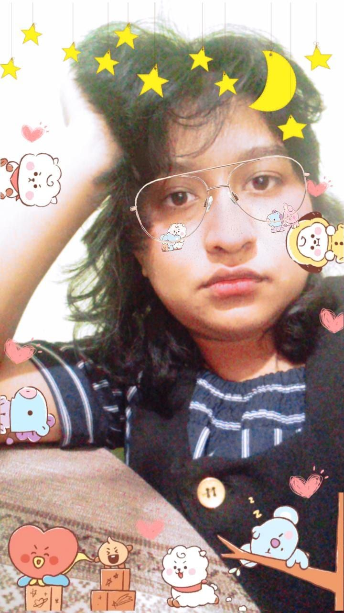

Michel Alexandra Morales Cortés
 Mi nombre completo es muy largo, prefiero mi segundo nombre y apellido para ser llamada. Tengo 22 años de edad y mi cumpleaños es en Diciembre. Soy de Puebla y nunca e cambiado de dirección. Al salir de la preparatoria entre a la universidad en la licenciatura de Matematicas Aplicadas pronto me di cuenta que no era el lugar para mi y cambie de carrera al segundo semestre. Entrar a Diseño Grafico fue distinto pero era mi lugar y actualmente en el septimo semestre no me arrepiento de mi decisión.
Soy una persona fiel a sus gustos, mi grupo favorito es BTS, tengo varios animes favoritos Haikyuu!, One Piece y mangas tambien. Me encanta leer novelas y ver documentales (culpa de mi hermano). Adoro caminar aunque en el momento de iniciar me queje, la ilustración, fotografia y editorial son ramas de la carrera que me interesan mucho. Algo que adoro de la carrera es el hecho que puedo incluir mis gustos en mis trabajos.